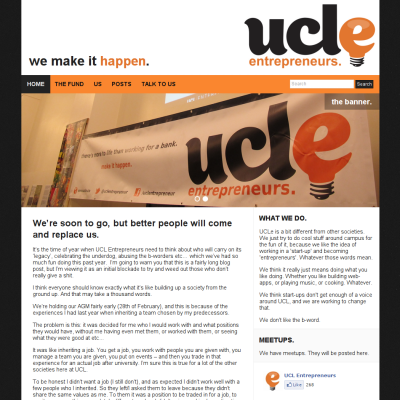
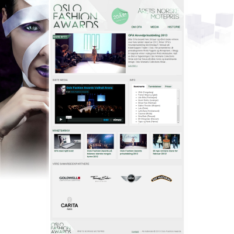
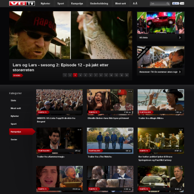
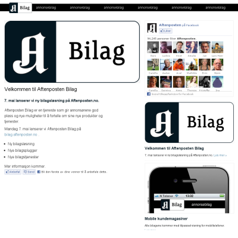
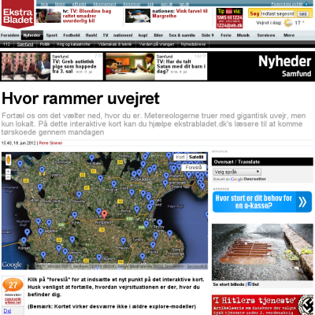
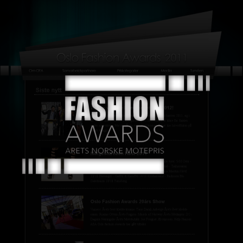

-

UCL Entrepreneurs Society February 2013 to August 2013
The old website for the UCL Entrepreneurs Society was a non-responsive Tumblr blog. For the new site, WordPress was used instead, and the frontend was rewritten as a fully responsive WordPress theme. In addition to making it easier to add and edit blog posts for members of the committee, the new site also allows editing the sidebar, custom pages, the slideshow and other non-bloggy aspects of the page.
One issue with this site was building a responsive theme where the sidebar was also flexible. This was difficult because most social plugins aren't made to be non-responsive, and even more so by the fact that the admins of the site can add content to the sidebar at will. The solution isn't perfect, but I believe the end user experience turned out good.
The site was designed by me and tweaked by members of the committee when it was presented to them. The color scheme is in line with the society's, as is the explicity use of case in headers. Note that the design is em-based, not px-based, so it should scale well when zoomed, not just when resized.
-

Oslo Fashion Awards v2 February 2013
This new version of the Oslo Fashion Awards site was more than a mere redesign. The entire backend was changed to WordPress and then site was redeveloped from the bottom up as a WordPress theme.
The site is mostly responsive (responsive videos are still a pain) like all the sites I make, and the administrators can change almost every part of the site. The menus in the header, in the footer and the infobox can be dynamically changed, the content of every page can be edited (including the front page media box).
Once again the design was supplied by Oslo Fashion Awards, and although it is mostly straightforward, there were some interesting challenges. One detail that proved particularly interesting (although it isn't noticeable to the average user) is the background image. The effect is only visible on really large screens (> 2600px wide), but it was a good intellectual challenge. See if you can figure out what it does!
-

VGTV November 2011 to June 2012 (Aptoma)
I was tasked with developing a new, completely redesigned version of Norway's biggest online video portal. The new site was designed by Making Waves for VG, and then implemented by me.
The site is fully responsive, as it should be, and is implemented solely in JavaScript using the API from Aptoma's video solution DrVideo This allows for very easy development and deployment, as well as giving additional flexibility in rendering logic depending on the user's device. It also utilizes both Flash and HTML5 video playback, and is integrated with several ad and statistics systems including Videoplaza and Xiti.
After my departure from Aptoma, development was handed over to VG's internal development team.
-

Blind Film v2 June 2012
A complete redesign and restructuring of the website for the video production company Blind Film.
Equipped with an administration panel and Vimeo import, it allows the company full control over what videos to feature and categorization of these.
The frontend was designed by Torgeir H. Riseth, the founder of Blind Film, in cooperation with me, and implemented by yours truly. It is fully responsive all the way down to mobile screens, and, per the user's request, has a lot of smooth animations and transitions to make the user experience a bit more fancy than a "regular" site.
-

Aftenposten annonsørbilag May 2012 (Aptoma)
Aftenposten approached Aptoma, wanting to establish a site where they could let advertisers publish news-like stories which would be featured on the frontpage of the newspaper.
Having created a similar solution for Ekstrabladet in Denmark, I developed the site, using DrPublish from Aptoma as a backend for content and developing a standalone administration tool for managing ads, tracking codes and such.
The site is responsive, extremely flexible (each advertiser can skin their own section individually and supply HTML content for several key positions on the site) and built to scale really well using ESI, Varnish and a purge-on-update strategy.
-

Modules for Ekstra Bladet January to May 2012 (Aptoma)
Ekstrabladet, a large Danish tabloid, was looking for a way of enriching their articles with maps, image grids, slideshows and other non-text snippets. Through discussions with Aptoma, we established an editorial development team consisting of myself, Lars K. Jensen (journalist) and Anders Bergmann (designer & developer) who were going to develop such modules.
I then developed a module framework that allowed rapid prototyping and deployment of such tools, as well as modules for embedding maps with user suggestions, timelines, images with hotzones, etc. This was very successful, and many of the modules are in use in articles at ekstrabladet.dk today.
For a more thorough description of this team, and examples of the modules, have a look at Lars' write-up about the project.
-

Portfolio of Meg Rylance December 2011
An online portfolio for Australian editor Meg Rylance, including videos fetched directly from Vimeo with thumbnails and inline player, customized contact form and full testimonials page
The page is written in pure HTML+JS, and has no backend code (and thus no administration) for the time being. It uses CSS3 transitions to achieve a pleasant animation when opening/closing a page.
The client wanted a bold design that was still easy on the eye once a page was opened, and the big black bar contrasting with the orange background works well to achieve this effect. When a page is opened, the black bar is still visible, but the orange is muted by only appearing as a slim stripe on either side of the content.
-

Portfolio of Torgeir Fotland February 2011
A simple, static portfolio for Norwegian cinematographer Torgeir Fotland featuring his latest videos, photos, as well as his rental gear.
This is a single-page, multi-view site, in which each section of the page is horizontally adjacent to the previous one, making moving from one section to the next an act of scrolling left-to-right. Using the jQuery scrollTo library, the page remains accessible (anchor links to particular sections still work as expected), while still giving a smooth scroll effect to users with JavaScript.
As per the clients request, the page is quite wide, since netbooks and the like were not in the website target group.
-

Produktavdelingen Development handed over October 2011
This page was designed by Awknard, and required a Wordpress-based backend, custom fonts and a dynamically changing logo in the center of the page.
One of the client's requirements was that the admin panel had to be very simple and preferably familiar. I ended up using WordPress for the underlying administration panel, and write a custom frontend using the WordPress API.
The site features a menu with optional sub-items that open inline lightbox-like boxes (ColorBox), all manageable from inside WordPress. It also allows custom author names for external editors, multi-column popup content and image uploading for articles.
The designer wished the page to look as though it was on a sheet of paper resting on a flat surface, but did not want an extensive use of images on the site. CSS3 is therefore employed in compatible browsers for drop shadows, font smoothing and multi-columnization.
-

Subgarden Studios Discontinued
A website made for a sound production studio called Subgarden Studios. The design is a collaboration between me and Torgeir Riseth who runs Blind Film. It contains several pages, but everything is loaded through AJAX.
The site sports a javascript-driven sound playing engine for track playback, inline page editing and post creation. It also features an image gallery, simple rich-text editing syntax for each post including bold, italic and underline typeface and links.
Each post also supports attachments that are displayed based on their type. Images are shown as slideshows beneath the post, sound clips in a self-developed javascript-driven player through SoundManager2 and external embedded content can also be included and is shown in a lightbox-like popup.
-

Oksnøen summer camp October, 2009
This website was developed in the summer of 2009 for a Norwegian summer camp for children between the ages of 7 and 15 at which I have been working for the past 5 years.
The previous website was completely static HTML and used frames and javascript navigation. Whenever the page needed updating, the owners had to call the original developer and have him hand code the changes
The new site is dynamic from start to finish, with section-dependent styling (separate color scheme for each section), word-like administration of pages (with add and delete as well). It also sports a news feed at the bottom of the front page for giving updates.
In Fall 2011, the site was rewritten completely again to accomodate for a new online booking system with support for online payment. Due to business decisions, the online payment solution was abandoned, but the site still operates on the rewritten code.
-

Blind Film Feburary, 2010
A friend of mine from Norway told me about a design for a website for his film company Blind Film which he felt like he was never going to complete because he did not have the knowledge to create such a site. After showing him some of my work, he agreed to let me build a prototype.
As I began with the prototype, I quickly found that I enjoyed building the site, and considering it was quite small, I began to implement the entire site design. Two days later, the site was finished - complete with administration and dynamic content.
The site features a lot of animation (using jQuery), vimeo integration, and an AJAX driven administration interface. The user does not have to go to a separate page for administration of content, but can simply edit on-site. Login and logout is hidden, but accessed simply by using a key seqence.
-

International Friend Discontinued as of June, 2010
InternationalFriend is a project between me and a couple of friends that is still under development. It aims to create a global online community for young people; a community where teenagers can find all they would ever need on the internet.
The current InternationalFriend site is developed in PHP and PostgreSQL by Jonas B. Amundsen and me, and designed by Owen Frazer Wray. It is based on a homegrown CMS-like system, and allows full group-based administration of all content
We are currently developing the next release, and this will be done with the Yii PHP Framework, will be a lot more dynamic that the current one (more AJAX). Furthermore, it will contain a lot more of the social aspect that the site is currently missing.
-

Portfolio of Per Miljeteig April, 2009
Per Miljeteig is a Norwegian photographer who was in the need of a new website since his old one was completely static, and the old webmaster had passed away. We agreed to do a redesign as well so that he could determine the look of his own portfolio.
The new site allows him to upload his own images and create albums through a simple admin interface. It also allows for editing the various text pages around the page through a word-like editor.
-

Oslo Fashion Awards September, 2008 - February, 2013
Oslo Fashion Awards came to me with a site design, and wanted me to script the page. They also required a simple way of adding new articles, as well as the occasional video. This is now done through a very simplistic admin interface.
Though several parts of this site is static, such as the sponsors and tour pages which do in fact change ever so often, the customer was very happy with the result. I have plans for making an admin interface for the remaining pages as well, but the customer does not require this yet, so...